Optical design patterns
Find an optical arrangement for the job, then open it in the canvas.
162 patterns · 19 functions · 96 setups ready to explore
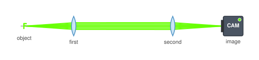
Image relay / 4f relay
Two 100 mm thin lenses relay an object plane to an inverted image over 400 mm; the shared focal plane remains accessible.
Explore this setup →Previews come from the OpticalSetup canvas. Each available setup opens with real components and traced rays. Patterns that need missing components are marked No setup available.
162 patterns
No matching patterns
Try a broader term or remove a filter.
Transferring images, beams, and pupils
Image relay / 4f relay
Reimage an object plane at a chosen location and magnification.
Open setup →

Afocal telescope / beam expander
Change a collimated beam's diameter and angular spread.
Open setup →
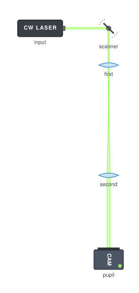
Pupil relay
Image a pupil onto an accessible optical plane.
Open setup →
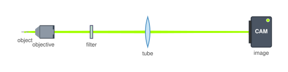
Infinity-corrected imaging
Use an objective and tube lens with an intermediate collimated space.
Open setup →
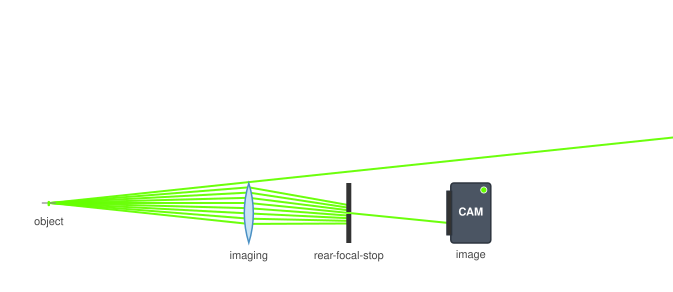
Telecentric imaging
Control chief-ray directions in object space, image space, or both.
Open setup →
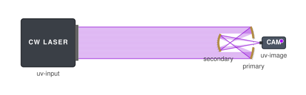
Reflective imaging relay
Form images with powered mirrors over a chosen field and spectral range.
Open setup →
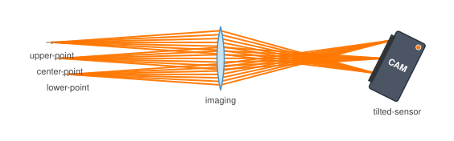
Scheimpflug imaging
Bring a tilted object plane into focus with coordinated optical and sensor tilts.
Open setup →
Image rotation and derotation
Set or stabilize image orientation through an optical train.
The registry has no 3D K-mirror image rotator or transverse image-field rotation. Three coplanar mirrors can fold a ray but cannot demonstrate this indispensable out-of-plane image rotation in a 2D scene.
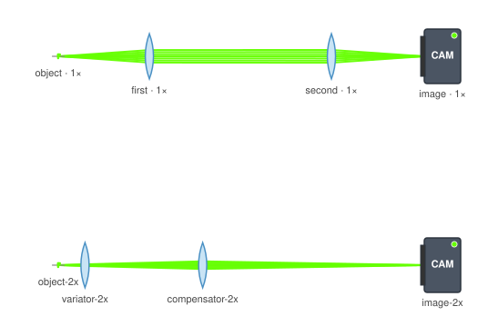
Compensated zoom
Change magnification while maintaining a designated image plane.
Open setup →
Preparing and transforming beams
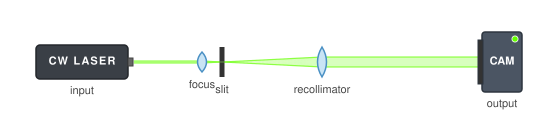
Spatial filtering and recollimation
Select a cleaner spatial distribution at a focus and recollimate it.
Open setup →
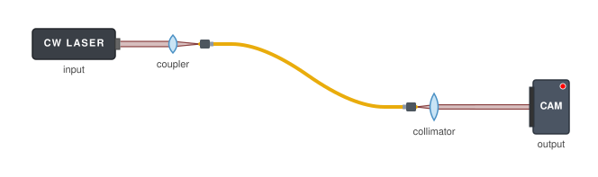
Single-mode filtering
Project collected light onto a supported guided spatial mode.
Open setup →
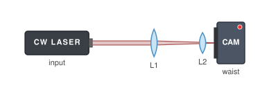
Mode matching
Match beam size, waist location, and wavefront curvature to a receiving mode.
Open setup →
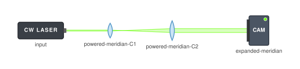
Anamorphic beam shaping
Adjust the two transverse beam axes independently.
Open setup →
Irradiance remapping
Redistribute an input intensity profile into a target profile.
The source lacks a spatial Gaussian irradiance distribution and the registry has no solved two-surface Gaussian-to-top-hat energy-remapping prescription. Ordinary lenses or unsolved aspheres cannot demonstrate the required irradiance mapping.
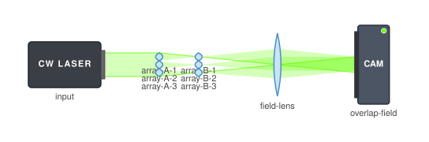
Beam homogenization
Mix or overlap beam portions to reduce illumination nonuniformity.
Open setup →
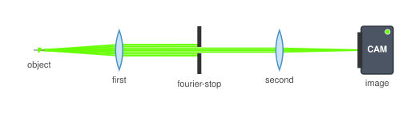
Fourier-plane filtering
Select spatial frequencies or diffraction orders in an accessible Fourier plane.
Open setup →

Programmable wavefront shaping
Control a field's spatial phase or amplitude through a relayed modulator.
Open setup →
Illuminating and projecting
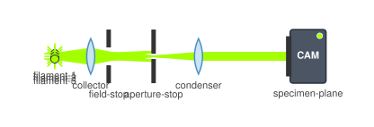
Kohler illumination
Control illuminated field and illumination aperture through separate conjugate-plane sets.
Open setup →
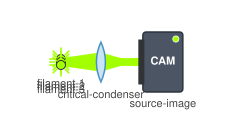
Critical illumination
Image the light source directly onto the plane being illuminated.
Open setup →
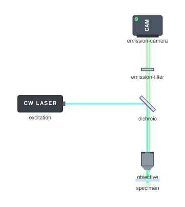
Epi-illumination
Share an objective between illumination and signal collection.
Open setup →
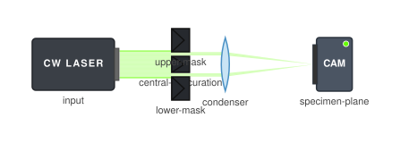
Pupil-shaped illumination
Choose the angular illumination distribution by structuring a pupil plane.
Open setup →
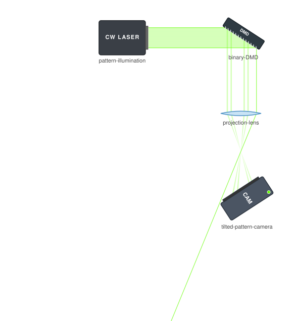
Structured illumination / pattern projection
Project known spatial patterns for excitation, exposure, or measurement.
Open setup →
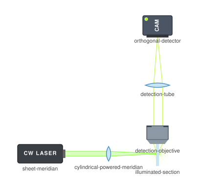
Light-sheet illumination
Restrict excitation to a thin plane within the observed volume.
Open setup →
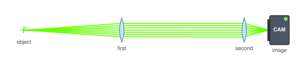
Reduction projection
Transfer a mask or modulator image to a target at reduced scale.
Open setup →
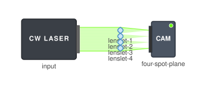
Multispot illumination
Distribute excitation or processing light across several target points.
Open setup →
Scanning and changing optical paths
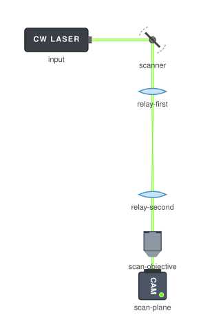
Pupil-conjugate scanning
Move a focused spot while keeping the scan pivot conjugate to the objective pupil.
Open setup →
Relay between scan axes
Make separated scanner axes optically conjugate.
Independent orthogonal galvo axes and their conjugate pupil mapping require a second transverse coordinate and out-of-plane mirror orientation. Two native coplanar galvos cannot demonstrate a true X/Y raster.
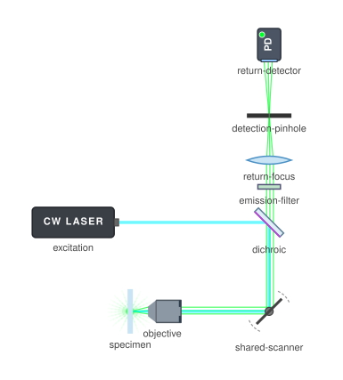
Scan-descan
Undo the scanning motion on the return path before detection.
Open setup →
F-theta scanning
Map scan angle to a designed displacement across a working plane.
The registry has no f-theta scan-lens prescription or distortion law x = fθ. Its native ideal thin lens instead maps the meridional angle approximately as f tanθ and cannot demonstrate the specified flat-field f-theta correction.
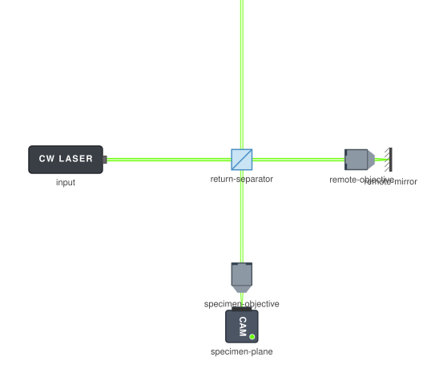
Remote focusing
Shift the observed or excited plane by adjusting remote optics.
Open setup →
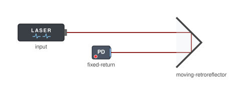
Fixed-output variable delay
Change optical path length while preserving a defined output geometry.
Open setup →
Double-pass AOM
Compensate frequency-dependent beam steering while shifting optical frequency.
The native AOM does not compute optical-frequency shifts or the bidirectional diffraction-order relation required for a +160 MHz double-pass cat-eye output. A pair of bent ray paths would not demonstrate frequency doubling or pointing compensation.
Multipass propagation
Obtain a long interaction path in a compact volume.
A true Herriott cell needs the two-transverse-axis off-axis spot orbit and independently placed entrance/exit mirror holes. The 2D mirror model only supplies a central hole and cannot represent the indispensable selected 3D exit spot.
Separating, combining, and routing channels

Wavelength combining and splitting
Route different spectral bands through shared or separate optical paths.
Open setup →

Polarization combining and splitting
Use orthogonal polarization states as separable optical channels.
Open setup →

Waveplate-polarizer attenuation
Adjust delivered power by rotating polarization before selecting a channel.
Open setup →

Polarization-based send/return separation
Distinguish outgoing and returning light by their polarization transformations.
Open setup →

Nonreciprocal routing
Direct light differently in forward and reverse propagation.
Open setup →

Polarization diversity
Process both orthogonal polarization components in parallel.
Open setup →

State preparation and analysis
Prepare and measure optical polarization through controlled transformations.
Open setup →

Sample/reference splitting
Provide a simultaneous reference channel alongside the sample channel.
Open setup →
Comparing optical fields

Two-arm interferometry
Compare phase or path changes between distinct optical arms.
Open setup →
Common-path interferometry
Share much of the propagation path between signal and reference.
The registry slit clips geometrical rays but does not diffract light into a new coherent spherical reference wave. That pinhole-generated reference is indispensable to this point-diffraction common-path interferometer.
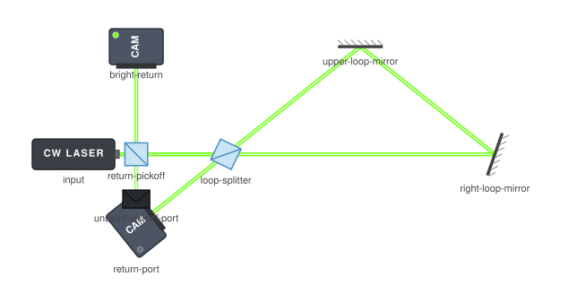
Counterpropagating-loop interferometry
Compare opposite propagation directions around one optical loop.
Open setup →
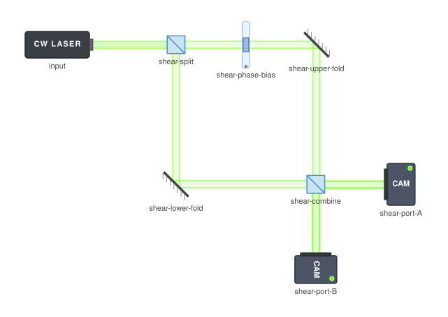
Shearing interferometry
Interfere shifted or tilted copies of the same wavefront.
Open setup →
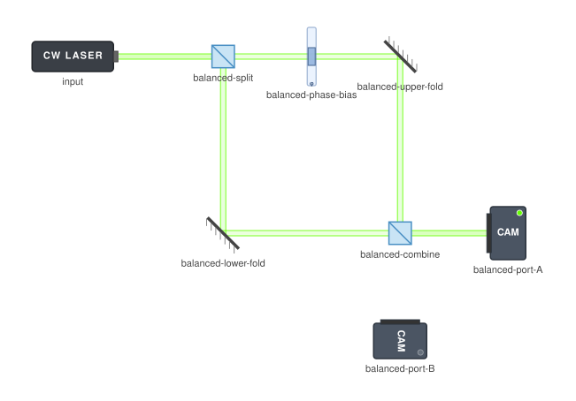
Balanced detection
Subtract complementary optical outputs to reject common-mode fluctuations.
Open setup →
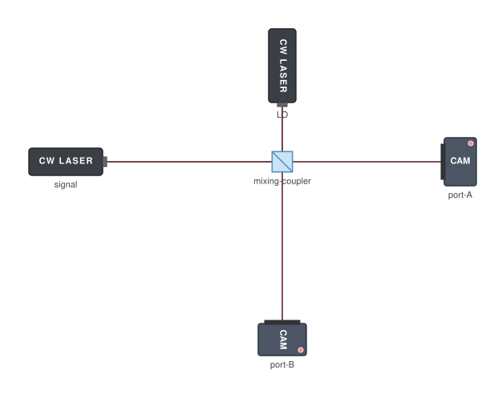
Homodyne / heterodyne reception
Mix a signal with a local oscillator to read field quadratures or beat signals.
Open setup →
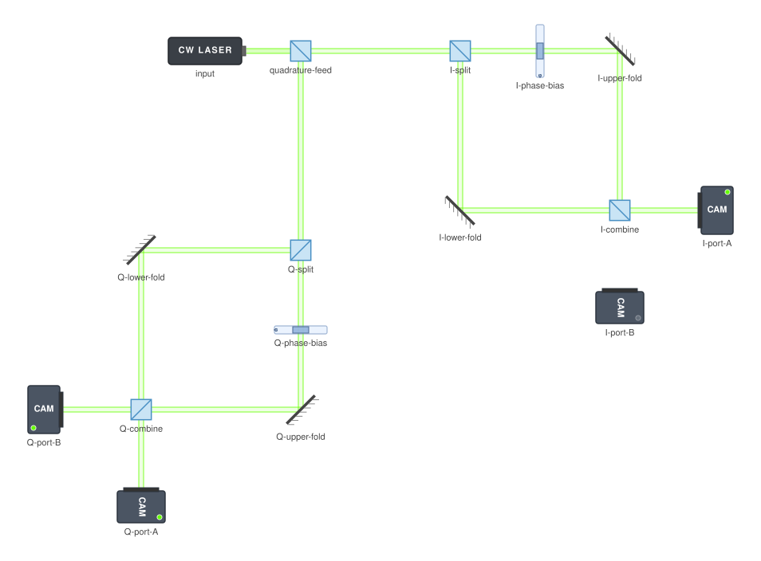
Optical I/Q detection
Measure two quadratures to recover a complex optical signal.
Open setup →
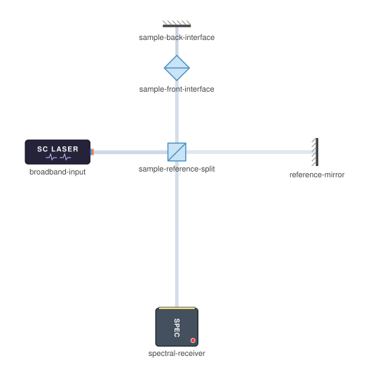
Low-coherence interferometry
Resolve optical path differences using broadband interference.
Open setup →

Nulling interferometry
Suppress a dominant coherent component through controlled destructive interference.
Open setup →

Coherent aperture combination
Combine light from separated collection apertures while retaining phase information.
Open setup →
Selecting spatial signals and creating contrast
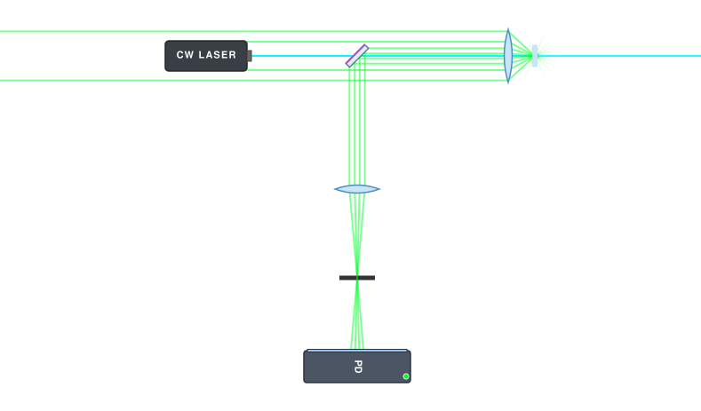
Confocal excitation and detection
Overlap an illuminated region with a conjugate detection aperture.
Open setup →
Parallel confocal detection
Acquire several confocal points while limiting mixing between channels.
The registry has no matched rotating microlens/pinhole disks or independently resolved parallel confocal channels.
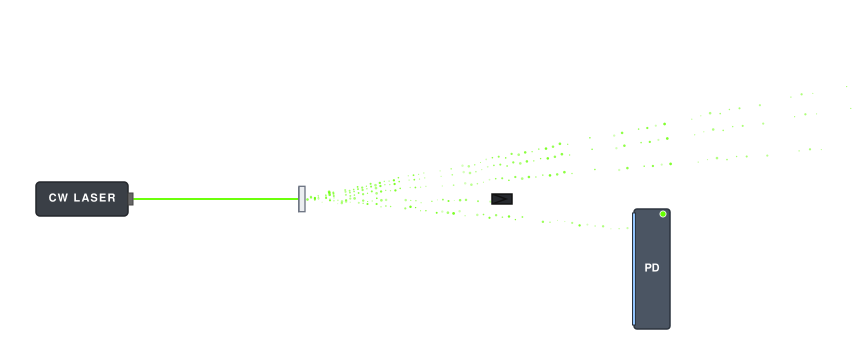
Dark-field collection
Exclude direct or specular light while collecting redistributed light.
Open setup →
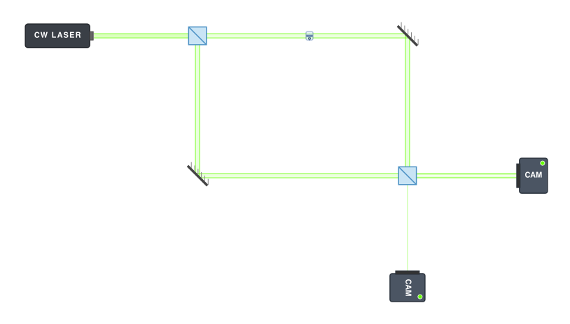
Phase-to-intensity conversion
Modify the relative phase of reference and scattered fields to create intensity contrast.
Open setup →
Differential interference contrast
Compare nearby optical paths through polarization splitting and recombination.
Nomarski/Wollaston shearing prisms and polarization-dependent lateral shear are absent; ordinary prisms cannot replace them.
Evanescent-field excitation
Restrict illumination to a thin region near a refractive-index interface.
A prism can show total internal reflection, but the tracer has no evanescent excitation field or near-interface fluorescence coupling. A TIR-only ray would not implement this excitation pattern.
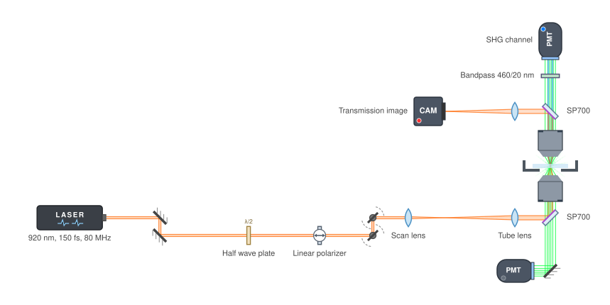
Nonlinear focal excitation
Localize signal generation through an intensity-dependent interaction.
Open setup →
Excitation plus depletion
Confine effective fluorescence by overlapping excitation with a shaped depletion field.
There is no stimulated-depletion specimen response or vortex depletion field with a central vectorial intensity minimum.
Separating and measuring spectra

Slit-collimator-disperser-camera
Map wavelength to detector position while imaging an entrance slit.
Open setup →
Cross-dispersed spectroscopy
Separate overlapping spectral orders using an additional dispersion direction.
The workbench has one transverse dimension; orthogonal cross-dispersion and a two-dimensional echelle order map cannot be represented.
Image slicing / integral-field feed
Rearrange a two-dimensional field into inputs suitable for spectroscopy.
There is no image-slicer mirror assembly or spatially ordered pseudo-slit reformatting component.
Fixed-exit monochromation
Tune the selected band while maintaining a defined output trajectory.
There are no Bragg-diffracting crystals, linked second-crystal translation, or X-ray source wavelengths. A nonlinear crystal is not a Bragg monochromator.
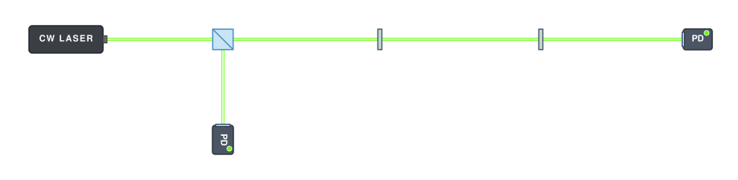
Cascaded spectral filtering
Use successive selection stages to improve out-of-band rejection.
Open setup →
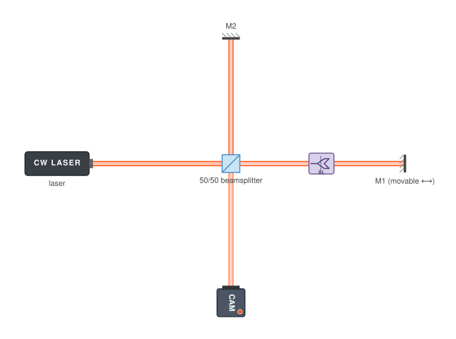
Fourier-transform spectroscopy
Recover spectral content from an interferogram measured versus optical delay.
Open setup →

Excitation cleanup and rejection
Suppress source impurities and source leakage around a weak collected signal.
Open setup →
Dual-comb spectroscopy
Map optical spectral information into distinguishable radio-frequency beats.
Sources do not provide mutually coherent frequency-comb teeth with independently controlled repetition offsets, and detectors have no RF heterodyne-comb readout.
Recirculating and amplifying light
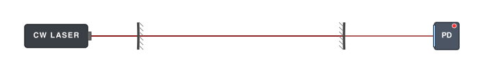
Stable optical resonator
Recirculate a supported optical mode through a chosen sequence of surfaces.
Open setup →
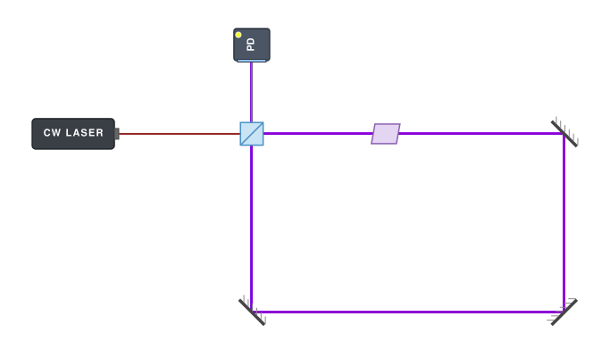
Resonant enhancement
Build circulating power from an externally driven coherent input.
Open setup →
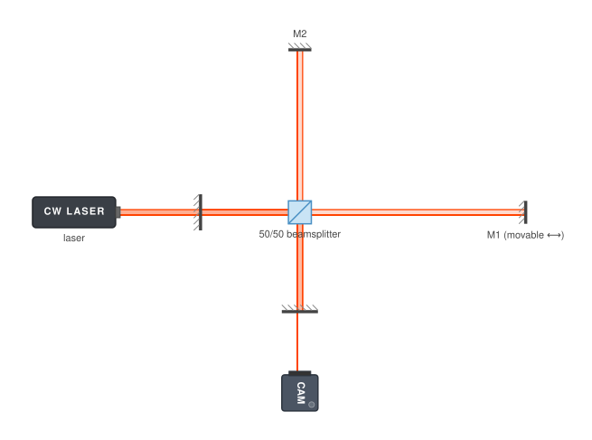
Power and signal recycling
Return selected interferometer outputs to alter stored power or signal response.
Open setup →
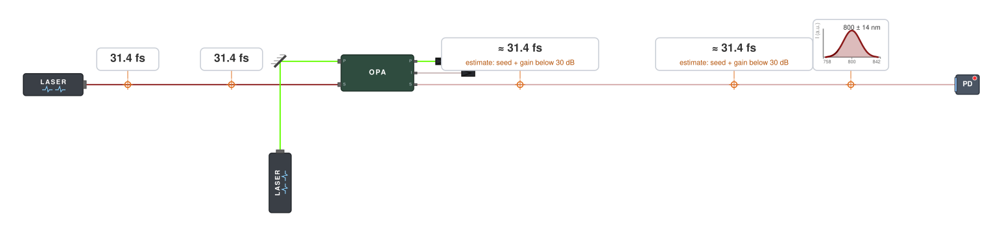
Master oscillator-power amplifier
Separate beam generation and spectral control from power amplification.
Open setup →
Regenerative amplification
Trap a seed pulse for repeated amplification and then release it.
There is no laser gain medium with round-trip regenerative amplification or pulse trapping/extraction across successive gated round trips. The seeded single-pass OPA does not provide cavity gain.
Q-switching
Store energy in a gain medium before enabling rapid laser emission.
The AOM can switch an optical path, but no gain medium stores inversion or releases a Q-switched laser pulse; a passive AOM cavity cannot implement Q-switching.
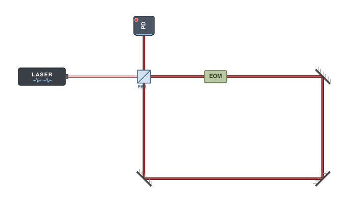
Cavity dumping
Rapidly extract optical energy already circulating in a resonator.
Open setup →
Mode-locked oscillator
Synchronize longitudinal modes to generate a repeating pulse train.
The registry lacks a fast saturable absorber/Kerr-lens mode-locking response and oscillator pulse-formation dynamics; a pulsed source cannot stand in for the oscillator.
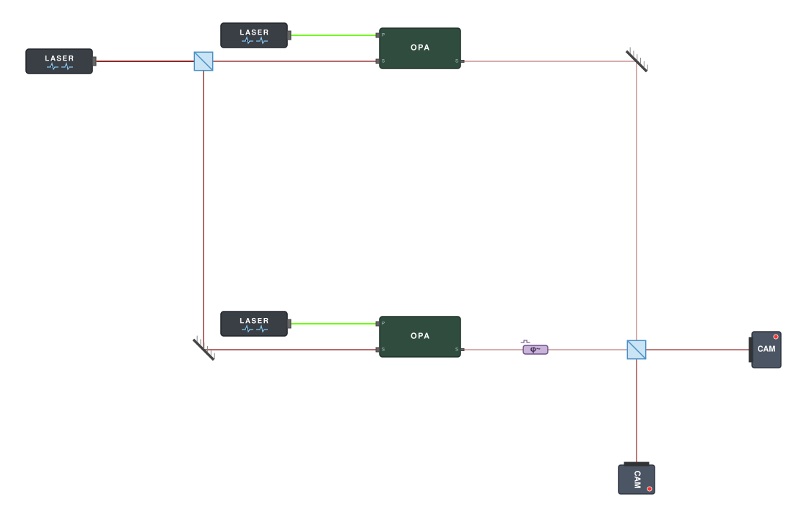
Coherent beam combining
Combine amplified channels while controlling their relative phases and modes.
Open setup →
Handling pulses and nonlinear interactions
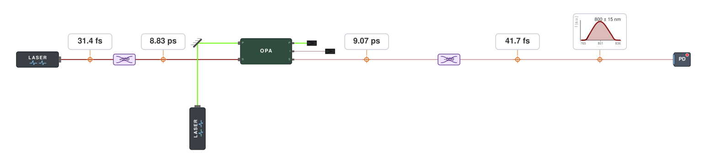
Chirped-pulse amplification
Stretch an input pulse, amplify it, and recompress it afterward.
Open setup →
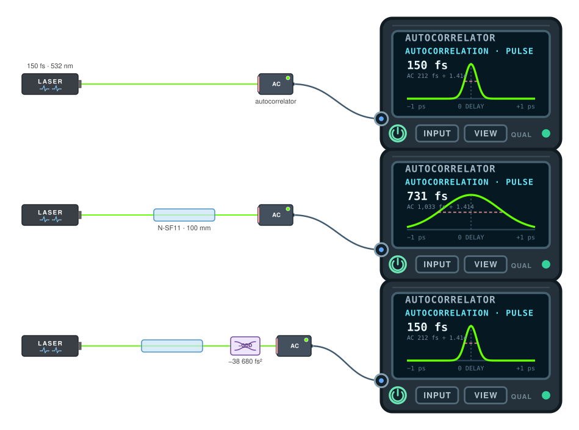
Dispersion compensation
Combine dispersive contributions to obtain a target pulse duration and spectral phase.
Open setup →
Fourier pulse shaping
Resolve a pulse spectrum spatially, modify it, and recombine it.
The SLM supports spatial steering and lens-array overlays, but not independent spectral amplitude/phase pixels or temporal Fourier synthesis at a dispersed spectral plane.

Nonlinear broadening plus compression
Generate additional bandwidth in a nonlinear medium and compensate the output phase.
Open setup →
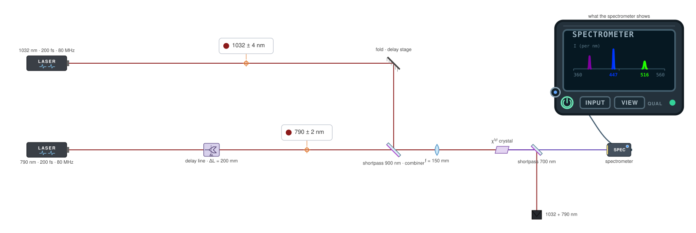
Pump-probe
Prepare a sample and interrogate its response at a controlled delay.
Open setup →
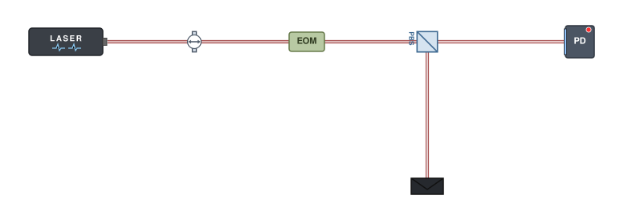
Pulse picking and burst formation
Select pulses or pulse groups from a faster repetition train.
Open setup →
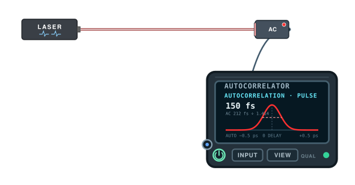
Autocorrelation and cross-correlation
Measure overlap between delayed pulse replicas or different pulses.
Open setup →

Spectrally resolved pulse characterization
Encode temporal information into spectral measurements for pulse reconstruction.
Open setup →

Nonlinear frequency conversion stage
Coordinate interacting beams and a nonlinear medium to generate or amplify selected frequencies.
Open setup →
Electro-optic sampling
Map a fast electric field onto a synchronized optical probe's polarization.
No THz source field or electro-optic crystal coupling from the sampled THz field to optical retardance is available.
Transporting optics into constrained spaces

Serial image relay
Transfer an image through a long narrow optical channel.
Open setup →
Coherent image-bundle transport
Transfer spatial image samples through an ordered collection of fiber cores.
Native fibers carry scalar ray channels; no coherent ordered multicore image bundle preserves a distal-to-proximal image map.
Proximal scanning through an image guide
Place the scanner outside the probe and address its ordered fiber channels.
The required coherent image bundle and core-addressed confocal return mapping are absent; scanning a single fiber does not implement proximal image-guide scanning.
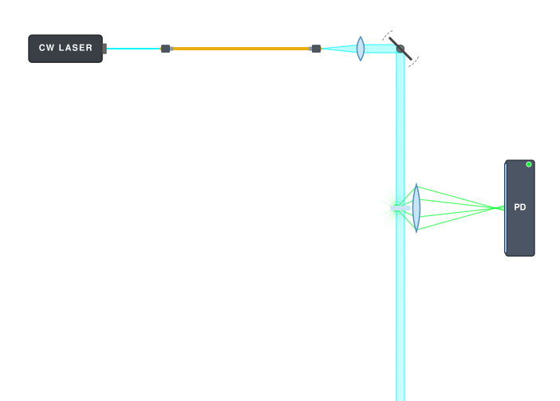
Distal scanning
Scan the beam at the probe tip instead of relaying a full image.
Open setup →
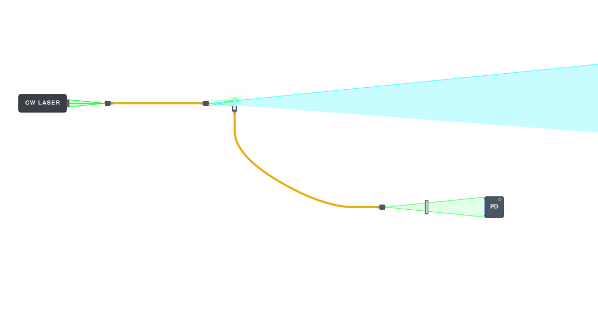
Separate illumination and collection channels
Allocate different probe channels to delivery and signal collection.
Open setup →
Side-viewing rotational probe
Acquire circumferential views through a lateral beam direction and probe rotation.
There is no rotary fiber joint, cylindrical sheath or three-dimensional circumferential side-view geometry.
Calibrated multimode transport
Use a calibrated mode transformation to focus or recover images through a multimode guide.
No multimode complex-field propagation, transmission-matrix acquisition or calibrated input-mode mapping exists; ordinary fiber paths cannot reproduce this transport.
Correcting wavefronts and rejecting background
Adaptive optics loop
Measure wavefront error and drive a corrector to compensate it.
Open setup →
Multi-conjugate correction
Distribute correction across planes conjugate to different aberrating regions.
Open setup →
Sensorless wavefront optimization
Optimize an optical quality metric instead of using a dedicated wavefront sensor.
Open setup →
Guide-star wavefront correction
Use a localized reference to estimate propagation distortions.
Open setup →
Coronagraphic rejection
Suppress a bright source through coordinated field and pupil-plane operations.
Open setup →
Atmospheric dispersion compensation
Introduce angular dispersion opposing that accumulated in the atmosphere.
Open setup →
Cold-stop matching
Restrict an infrared detector's optical view with a cooled pupil stop.
Open setup →

Stray-light baffling
Intercept unwanted propagation paths before they reach sensitive optics or detectors.
Open setup →
Operating in X-ray and EUV regimes
Orthogonal grazing-incidence focusing
Focus the two transverse axes using separate crossed grazing-incidence mirrors.
Source wavelengths start at 150 nm, and the registry has no energy-dependent X-ray grazing-incidence mirrors or two orthogonal transverse focusing planes.
Nested grazing-incidence imaging
Collect and image short-wavelength radiation using nested reflecting surface pairs.
There are no X-ray wavelengths or nested axisymmetric Wolter shell pairs; a visible 2D conic mirror does not implement this collecting geometry.
Wide-field micropore imaging
Use many small reflecting channels to form images across a broad field.
Square micropore arrays, orthogonal wall-graze paths and wide-field lobster-eye geometry are absent, as are X-ray source wavelengths.
Distributed refractive power
Accumulate useful focusing power from a sequence of weak refractive elements.
There are no X-ray wavelengths, refractive-decrement materials or selectable compound X-ray lens cartridges; visible glass lenses cannot substitute.
Diffractive focusing with order selection
Isolate useful focused diffraction orders from unwanted transmitted and diffracted light.
There is no X-ray zone plate with diffraction orders and a central stop; the scalar metalens proxy does not implement zone-plate order sorting.
Propagation-based phase contrast
Convert sample-induced phase structure into intensity through propagation.
X-ray wavelengths and free-space Fresnel field propagation are absent; ray propagation cannot create the required phase-to-intensity fringes.
Grating-based phase analysis
Encode phase gradients and small-angle scattering into measurable fringe changes.
Source, phase and analyzer X-ray grating functions with Talbot interference and phase-stepped visibility readout are absent.
Multilayer reflective transport
Guide and image strongly absorbed wavelengths using band-selective reflective surfaces.
The 13.5 nm wavelength is outside source bounds and no multilayer EUV coating or reflective-mask projection prescription exists.
Transporting and processing guided optical information
Wavelength multiplexing and add/drop
Insert, route, or remove wavelength channels from a shared optical connection.
Open setup →

Interferometric modulation
Convert a controlled phase change into amplitude modulation through recombination.
Open setup →
I/Q optical modulation
Control two field quadratures through coordinated modulation branches.
Open setup →
Programmable interferometer mesh
Compose tunable couplers and phase shifts into a multimode optical transformation.
The registry has no guided 2×2 tunable interferometer cell, multiport waveguide junction or programmable mesh transfer model. A chain of free-space beamsplitters would not reproduce the specified four-mode mesh.
Mode multiplexing and demultiplexing
Map spatial modes to distinguishable channels and back.
The registry has no photonic lantern, spatial-mode-resolved guided fiber or coherent modal receiver. Its drawn fibers do not preserve or separate three spatial eigenmodes.
Adiabatic mode conversion
Transfer light between modal geometries using gradual structural changes.
No longitudinally tapered waveguide or guided eigenmode conversion element exists. A lens or ordinary fiber endpoint cannot represent the proposed adiabatic guide transition.
Fiber-to-chip / free-space-to-chip coupling
Match the optical field between external delivery and an integrated guide.
There is no chip edge facet, inverse-taper waveguide or fiber/chip mode-overlap interface. A fiber ending at a box would be a stand-in rather than a native coupling setup.
Optical phased-array steering
Control emitter phases to steer a combined far-field distribution.
The registry has no addressable coherent emitter array or far-field phased-array synthesis. Its SLM and separate lasers cannot establish the required inter-emitter phase-gradient response.
Distributed optical interrogation
Resolve responses from positions along a sensing guide.
Native drawn fibers lack distributed weak reflectors and position-resolved backscatter interrogation. A free-space delay bench cannot reproduce two reflection sites inside this fiber.
Preparing quantum states and manipulating particles
Heralded photon generation
Use detection in one output of a pair source to announce a correlated photon.
Native nonlinear conversion is classical. There is no photon-pair probability model, herald counter or coincidence gate, so an idler detector cannot herald a single photon in the workbench.
Indistinguishable-path entanglement generation
Superpose indistinguishable generation alternatives to prepare entangled outputs.
There is no entangled pair source, quantum polarization state or coincidence analyzer. A native Sagnac layout alone cannot represent the essential entangled-pair preparation and analysis.
Two-photon interference
Overlap photons at a beam splitter and compare output coincidence statistics.
Native beamsplitters and cameras compute supported classical interference, but no single-photon counters or two-photon coincidence/Hong–Ou–Mandel interaction exist.
Time-bin preparation and analysis
Encode and analyze alternatives associated with distinct photon arrival times.
There is no single-photon time-bin state preparation, matched quantum analyzer or gated central-slot coincidence counter. Classical delayed pulses cannot implement the specified quantum state.
Squeezed-field injection and readout
Deliver a squeezed field with the quadrature alignment needed for a measurement.
The OPO element does not produce squeezed vacuum or quantum quadrature noise. No shot-noise-referenced homodyne variance receiver exists, so ordinary detector powers cannot represent squeezing.
Optical tweezer with position readout
Combine optical confinement with a calibrated displacement measurement.
The registry lacks a trapped dielectric particle with optical-force dynamics and quadrant back-focal-plane position sensing. An objective and stationary sample would not be an optical tweezer with position readout.
Holographic trap arrays
Create and reposition multiple trapping sites through spatial beam control.
There is no holographic multi-trap potential or atom occupancy model. The native SLM does not synthesize an arbitrary four-focus trap array, and the camera does not count trapped atoms.
Counterpropagating optical lattice
Superpose coherent beams to create a periodic light-induced potential.
The registry has no coherent standing-wave optical potential or atom/lattice interaction. Counterpropagating classical rays alone do not establish lattice sites or confinement.
Multi-axis cooling and addressing
Arrange frequency- and polarization-controlled beams around an atomic sample.
No atomic transition, Doppler/Zeeman cooling force, six-beam 3D atom interaction or addressing-state model exists. The 2D native optics cannot represent the essential multi-axis cooling experiment.
Measuring distance, shape, motion, and samples
Coaxial transmit/receive
Share an external aperture while separating internal outgoing and return channels.
Open setup →
Time-of-flight ranging
Infer path length from the measured delay of returned light.
Open setup →
FMCW ranging
Compare a swept optical signal with its delayed return to infer distance and motion.
The registry lacks a swept optical-frequency source and a balanced heterodyne beat-frequency receiver. A static CW interference pattern cannot implement FMCW delay/velocity acquisition.

Optical triangulation
Recover position using separated observation or projection directions.
Open setup →
Fringe projection profilometry
Recover surface geometry from deformation of projected patterns.
The DMD does not project calibrated phase-stepped sinusoidal fringes onto a scattering height surface, and there is no phase-to-height acquisition/calibration model.
Crossed-beam Doppler measurement
Convert particle motion through an interference region into a measurable modulation.
There is no moving scattering particle or Doppler-frequency detector. A pair of crossing rays cannot produce the specified particle-scattered velocity waveform.

Angular and spectral collection channels
Separate scattered and emitted signals by angle and wavelength.
Open setup →
Evanescent sensing interface
Probe sample properties through an optical field extending outside a guiding surface.
The registry has no complex-index thin metal film, surface-plasmon interface or evanescent refractive-index sensing response. An ordinary prism/window cannot stand in for a gold-coated sensing interface.
Optical pump plus acoustic readout
Generate an acoustic response by optical absorption and detect it separately.
The registry contains no thermoelastic pressure source, acoustic propagation or ultrasound transducer. Optical sample emission cannot substitute for an acoustic readout.
Rotational or multi-view tomography
Combine projections or views to reconstruct internal spatial structure.
There is no rotating volumetric transmission object with line-integral projections or tomographic acquisition. A stage and one absorbing sample do not supply a multi-angle volume dataset.
Encoding measurements for reconstruction
Off-axis holography
Encode a field with an angled reference so its information can be separated computationally.
Open setup →
Phase-shifting interferometry
Acquire known reference-phase steps to recover optical phase.
Open setup →
Ptychographic acquisition
Use overlapping illuminated regions to constrain diffraction-based reconstruction.
The native camera does not record coherent far-field diffraction from overlapping sample patches, and there is no ptychographic object/probe acquisition model.
Coded-aperture imaging
Encode a scene with a known mask and recover it using a measurement model.
The workbench has no 2D binary coded mask and 2D shadowgram detector. Its one-dimensional detector profiles cannot represent the proposed coded-aperture measurements.
Single-pixel imaging
Recover spatial information from known patterns and integrated measurements.
The DMD cannot sequence a calibrated 64×64 complementary Hadamard illumination basis, and there is no spatially integrated mask/sample bucket-acquisition model.
Light-field capture
Sample ray position and direction to support view or focus reconstruction.
No microlens array or angle-resolved 2D subimage detector exists. One thin lens and a one-dimensional camera profile cannot capture a light field.
Phase-diversity acquisition
Use images with known optical differences to estimate image and wavefront jointly.
Open setup →
Optical Fourier processing
Apply spatial transformations through Fourier planes and designed masks.
The tracer does not propagate spatial-frequency diffraction through a Fourier-plane mask. A 4f ray relay with an aperture would show geometric clipping, not the essential optical Fourier processing.
Presenting images and distributing energy

Virtual-image combiner
Present an optical image while preserving a view of the surrounding scene.
Open setup →
Exit-pupil expansion
Replicate or distribute an exit pupil over a larger viewing region.
The registry has no pupil-replicating guided output couplers. Ordinary gratings and splitters do not preserve the angular image field through three waveguide replica regions.
Polarization-folded imaging
Fold an imaging path through selective polarization transformations and reflections.
The registry lacks a reflective-polarizer imaging cavity with a verified multiple-pass polarization-folded prescription. A lone PBS or folded mirror path would not be the specified pancake eyepiece.
Multifocal / varifocal presentation
Present images at several focal distances or adjust focal distance dynamically.
There is no synchronized image-plane engine and calibrated tunable-focus presentation sequence. A lens with an edited focal length cannot implement three time-multiplexed depth layers.
Retinal scanning projection
Build a displayed image by scanning modulated light through the eye pupil.
The native eye and scan mirrors do not implement a synchronized RGB pixel raster projected onto the retina with pupil-tracking and image acquisition. No retinal display is claimed.
Nonimaging concentration
Collect light over an angular range and guide it to a receiver.
Open setup →
Primary-secondary solar concentration
Use a main collector and a local second stage to deliver sunlight to a receiver.
Open setup →
Light-guide distribution and extraction
Transport light through a guide and release it along a designed distribution.
There is no light-guide transport element with spatially graded extraction microstructures and recycling. A drawn fiber or diffuser cannot reproduce an edge-lit panel.
Stabilizing, calibrating, and diagnosing
Power stabilization loop
Measure a beam fraction and correct delivered optical power through feedback.
Open setup →
Two-plane beam-pointing control
Distinguish and correct beam displacement and angle using separate observations.
Open setup →
Frequency locking to a reference
Derive an error signal from a reference and control source frequency.
The workbench has no RF sideband-resolved cavity-reflection detector, mixer or PDH error signal. Native phase modulation does not by itself supply a frequency-lock sensing channel.
Round-trip phase stabilization
Use a returned reference to compensate optical-link phase fluctuations.
No bidirectional phase-noisy fiber, coherent round-trip phase receiver or AOM phase-precompensation controller exists. Native fiber power transport cannot implement a compensated frequency link.
Focus-lock channel
Use a dedicated optical signal to maintain a chosen focus condition.
Open setup →

Reference-channel normalization
Compare measurement and reference signals to separate source changes from sample response.
Open setup →
Integrating-sphere measurement
Collect light across directions for radiometric characterization.
There is no closed diffuse integrating-sphere surface with repeated scattering, ports and baffles. A single diffuser does not implement a sphere flux measurement.
Pupil and image diagnostic branches
Observe field and aperture planes independently to diagnose an optical train.
Open setup →
Calibration-source injection
Introduce a known optical reference through a repeatable instrument path.
Open setup →